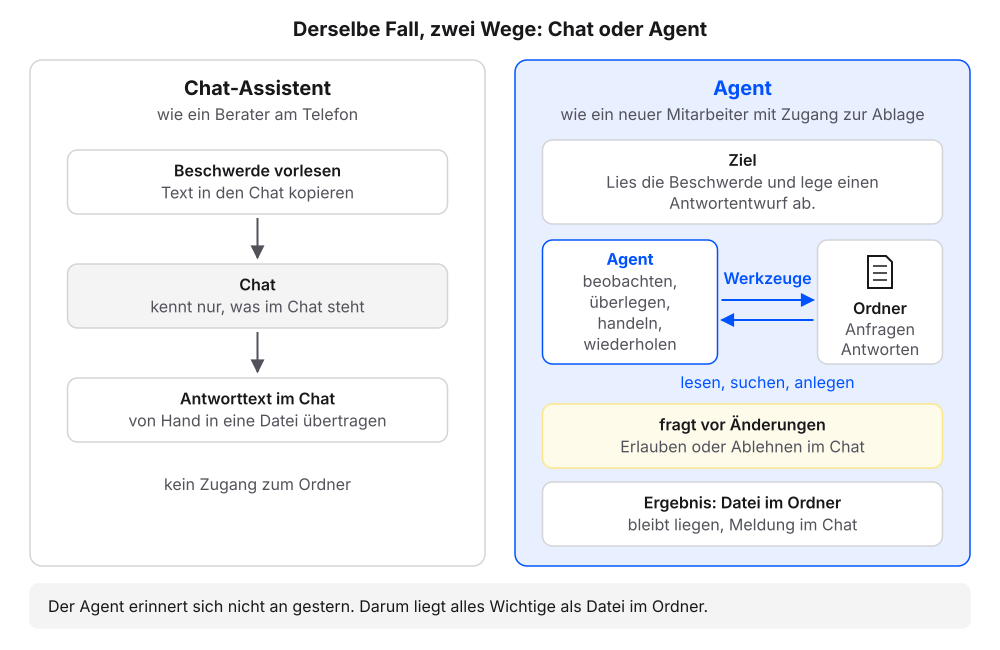
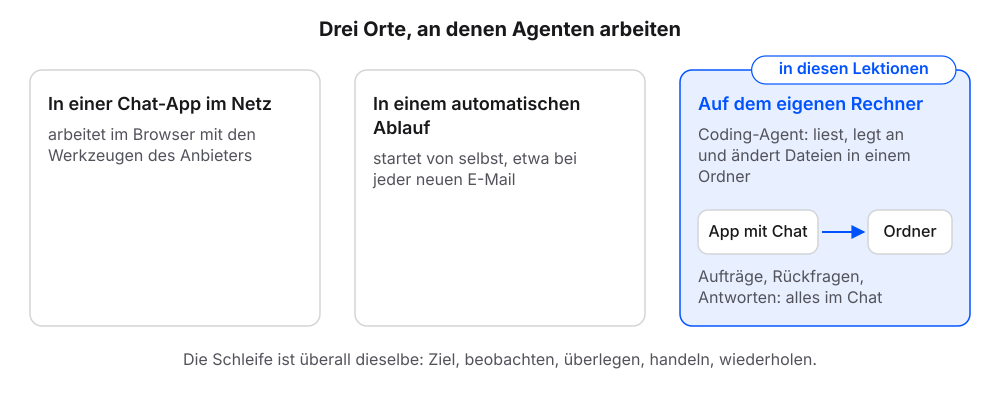
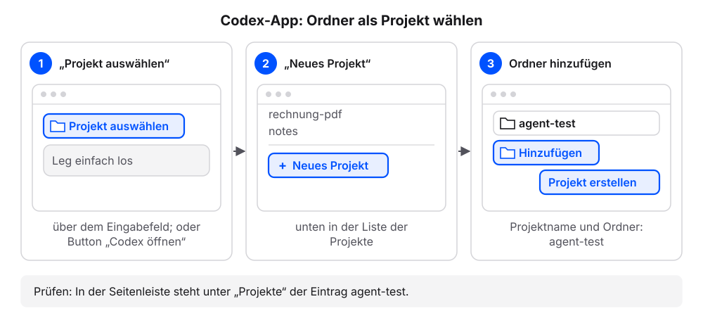
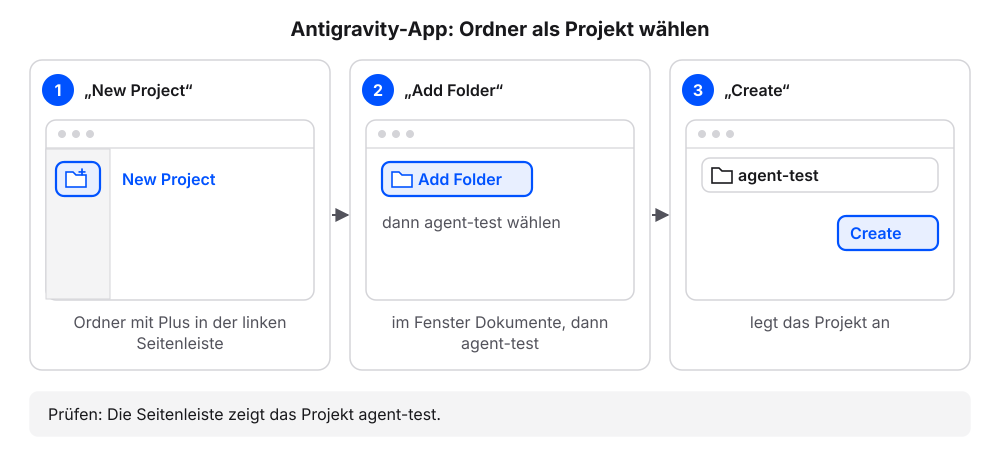
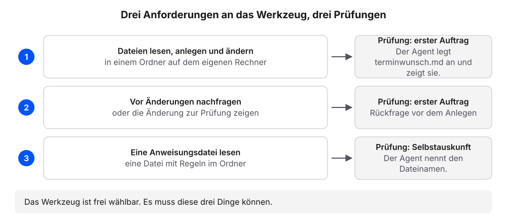
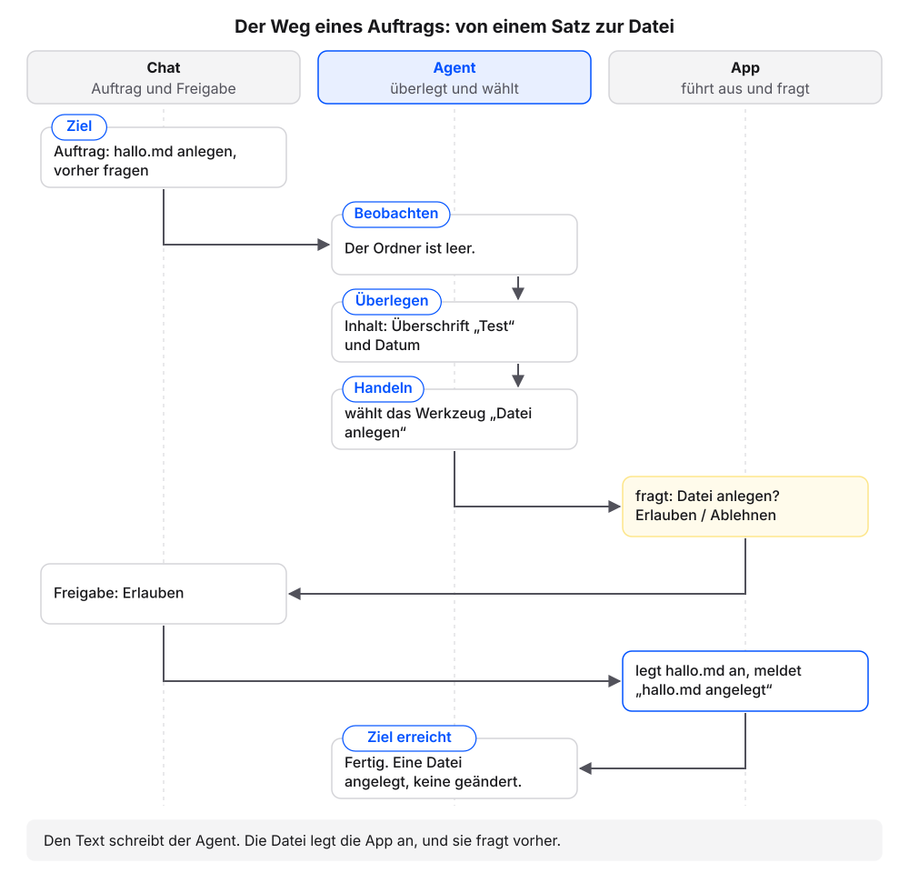
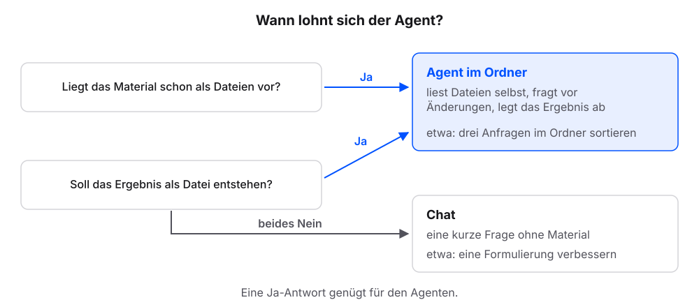

1 Chat oder Agent?
Eine Kundin schreibt: Die Reparatur war für Freitag zugesagt, bis heute keine Nachricht. Einem Chat-Assistenten lesen wir die Beschwerde vor und erhalten einen Antworttext. Ein Agent bekommt ein Ziel: „Lies die Beschwerde und lege einen Antwortentwurf ab.“ Dann arbeitet er in einer Schleife, bis das Ziel erreicht ist. Dieses Kapitel erklärt zuerst, was dabei passiert. Danach richten wir den eigenen Agenten ein und geben ihm zwei Aufträge; die Erklärung folgt jeweils am eigenen Ergebnis.
1.1 Was ein KI-Agent tut
Ein KI-Agent ist ein Programm, das ein Ziel verfolgt. Es beobachtet seine Umgebung (hier die Dateien im Ordner), überlegt den nächsten Schritt, handelt mit Werkzeugen und wiederholt das, bis das Ziel erreicht ist. „Überlegen“ meint dabei Verarbeiten und Planen im Programm, kein Nachdenken wie bei einem Menschen. Ein Werkzeug ist eine Fähigkeit, die der Agent abrufen kann: eine Datei lesen, eine Datei anlegen, den Ordner durchsuchen oder einen Termin eintragen. Ohne Werkzeuge bleibt ein Agent ein Chat.1


Für die Beschwerde heißt das: Der Agent liest die Beschwerde, stellt fest, dass ihm der Stand der Reparatur fehlt, durchsucht den Ordner, findet keinen Auftrag, schreibt den Entwurf mit einer Lücke für den Stand und meldet am Ende, was er getan hat. Der folgende Nachbau spielt diesen Ablauf Schritt für Schritt ab. An der Rückfrage entscheiden wir selbst, ob der Agent die Datei anlegen darf.
Zum Vergleich: Der Chat gleicht einem externen Berater am Telefon, dem wir jedes Mal alles vorlesen. Der Agent gleicht einem neuen Mitarbeiter am eigenen Schreibtisch mit Zugang zur Ablage. Vor wichtigen Schritten fragt er nach. An einer Stelle hinkt der Vergleich: Der Agent erinnert sich nicht von selbst an gestern. Jede neue Unterhaltung mit ihm beginnt ohne Erinnerung an die vorige. Darum steht in diesem Buch alles Wichtige als Datei im Ordner.

1.2 Welcher Agent hier gemeint ist
Agenten gibt es in Chat-Apps im Netz, in automatischen Abläufen und auf dem eigenen Rechner. Die Schleife ist überall dieselbe. In diesem Buch geht es um die Form auf dem eigenen Rechner: den Coding-Agenten. Seine Werkzeuge lesen, anlegen und ändern Dateien in einem Ordner. Gebaut wurde er für Programmcode. Er arbeitet aber mit jeder Textdatei, also auch mit Kundenanfragen, Protokollen oder Konzepten, und wir brauchen dafür keine Programmierkenntnisse. Beispiele sind Claude Code (Anthropic), Codex (OpenAI) und Antigravity (Google); Cursor arbeitet ähnlich.

Am schnellsten gelingt der Einstieg mit dem Agenten, der im eigenen Abo bereits enthalten ist: Codex in ChatGPT Plus und höher, Claude Code in Claude Pro und höher. Ohne Abo empfiehlt sich Antigravity, weil Google ein begrenztes Kontingent kostenlos bereitstellt; dafür genügt ein privates Google-Konto.
| Werkzeug | Anbieter | Zugang | App | Anleitung |
|---|---|---|---|---|
| Codex | OpenAI | im ChatGPT-Abo (Plus oder höher) | Codex-App | Codex-Dokumentation |
| Claude Code | Anthropic | im Claude-Abo (Pro oder höher) | Claude-Desktop-App, Bereich „Code“ | Claude Code in der Desktop-App |
| Antigravity | kostenlos mit privatem Google-Konto, begrenztes Kontingent | Antigravity-App | Antigravity-Dokumentation | |
| Cursor | Anysphere | eigenes Abo, kostenloser Einstieg | Cursor-App | Cursor-Dokumentation |
Wir arbeiten in der App des jeweiligen Werkzeugs, dem Programm auf dem Rechner. In jeder dieser Apps steht der Chat im Mittelpunkt: Dort geben wir Aufträge, dort erscheinen Rückfragen, Hinweise auf geänderte Dateien und Antworten. Die weiteren Bereiche der Apps braucht das Buch nicht. Die Apps sind englisch beschriftet; die Begriffe in Anführungszeichen stehen so in der App.
Jeder Schritt hat ab hier denselben Aufbau: eine Anleitung, ein Kasten „Das sollten wir jetzt sehen“, eine kurze Erklärung und ein Abschnitt „Wenn es anders aussieht“.
1.3 Schritt 1: App installieren und Ordner wählen
Voraussetzung: Zugang zu einem der Werkzeuge aus der Tabelle oben.
- Die App des eigenen Werkzeugs aus der Tabelle oben herunterladen.
- Die App wie jedes andere Programm installieren. Bei Fragen hilft die Anleitung des Herstellers aus der Tabelle.
- In der App anmelden. Je nach App öffnet sich dafür der Browser. Nach der Anmeldung zurück zur App wechseln.
- Im Ordner
Dokumenteeinen leeren Ordneragent-testanlegen. Finder: Menü „Ablage“, dann „Neuer Ordner“. Windows-Explorer: „Neu“, dann „Ordner“. - Den Ordner
agent-testin der App wählen. Je App geht das so (die Beschriftungen hängen von der Sprache der App ab):Claude-Desktop-App: auf Claude Code öffnen klicken. Fragt der Browser, ob er die App öffnen darf: erlauben. Die App öffnet den Bereich „Code“. Ohne Link: oben rechts auf das Code-Symbol (
</>) klicken, links daneben liegt die Sprechblase für den Chat. Vor der ersten Nachricht unter dem Eingabefeld auf die Umgebung klicken (etwa „Dieser Computer“), dann auf „Neue Umgebung“. Im Reiter „Lokal“ als Nameagent-testeintragen. Bei „Ordner“ auf „Hinzufügen“ und „Auswählen …“ klicken,Dokumente/agent-testwählen und auf „Umgebung erstellen“ klicken.
Claude-Desktop-App: Umgebung öffnen, „Neue Umgebung“, Ordner hinzufügen. Codex-App: auf Codex öffnen klicken. Fragt der Browser, ob er die App öffnen darf: erlauben. Die App öffnet einen neuen Thread. Über dem Eingabefeld auf „Projekt auswählen“ klicken, dann auf „Neues Projekt“. Als Projektname
agent-testeintragen. Unter „Quellordner“ auf „Hinzufügen“ klicken,agent-testwählen und auf „Projekt erstellen“ klicken.
Codex-App: „Projekt auswählen“, „Neues Projekt“, Ordner hinzufügen. Antigravity-App: in der linken Seitenleiste auf „New Project“ (Ordner mit Plus) klicken, dann auf „Add Folder“.
agent-testwählen und auf „Create“ klicken.
Antigravity-App: „New Project“, „Add Folder“, „Create“.
- Fragt der Rechner, ob die App auf den Ordner „Dokumente“ zugreifen darf: den Zugriff erlauben.
- Prüfen: Die App zeigt den Namen
agent-test, in Claude unter dem Eingabefeld, in Codex und Antigravity in der Seitenleiste. Der Chat ist leer.
1.3.1 Das sollten wir jetzt sehen
Schema einer App, kein echtes Produkt:
Oben der gewählte Ordner, darunter der Chat mit dem Eingabefeld. Weitere Bereiche der App brauchen wir in diesem Buch nicht.
1.3.2 Was gerade passiert ist
Wir haben den Arbeitsplatz des Agenten festgelegt: Er arbeitet in dem Ordner, den wir gewählt haben. Die Ordnerwahl war die einzige Bedienung der App selbst. Ab jetzt läuft alles über den Chat, auch das Anlegen von Ordnern und Dateien. Der Chat ist der Bereich der App, in dem wir Aufträge senden; hier erscheinen die Antworten des Agenten, seine Rückfragen vor Änderungen und Hinweise auf angelegte oder geänderte Dateien.
Auch was im Ordner liegt, erfahren wir im Chat: „Liste die Dateien in diesem Ordner auf.“ Wer eine Datei selbst sehen will, klickt im Chat auf den Dateipfad oder öffnet den Ordner agent-test im Finder oder Explorer.
Welches Werkzeug wir nutzen, ist für dieses Buch unerheblich. Es muss drei Dinge können:
- Es arbeitet in einem Ordner auf dem eigenen Rechner: Dateien lesen, anlegen und ändern.
- Es fragt vor Änderungen und vor dem Ausführen von Befehlen nach oder zeigt die Änderungen zur Prüfung.
- Es liest eine Anweisungsdatei (eine Datei mit Regeln) im Projektordner.
Schritt 2 prüft die ersten beiden Punkte, Schritt 3 den dritten.

- Der Rechner fragt, ob die App auf den Ordner „Dokumente“ oder „Dateien und Ordner“ zugreifen darf: den Zugriff erlauben. Ohne ihn sieht der Agent den Ordner nicht.
- Die Anmeldung öffnet den Browser, und danach passiert in der App nichts: zurück zur App wechseln. Je nach App dauert es einen Moment, bis sie die Anmeldung übernimmt.
- Die Anmeldung bei Antigravity mit einem Firmen- oder Hochschulkonto schlägt fehl: Ein solches Konto kann für Antigravity gesperrt sein. Ein privates Google-Konto nutzen.
- Die Claude-Desktop-App zeigt nur einen Chat ohne Ordnerwahl: Das ist der normale Chat. Oben rechts auf das Code-Symbol (
</>) klicken. - Die App zeigt neben dem Chat weitere Bereiche, etwa Dateien oder Änderungen: unbeachtet lassen. Für das Buch genügt der Chat.
- Die App fragt nach einem Projekt oder Arbeitsbereich: Gemeint ist der Ordner.
agent-testwählen. - Die App verlangt ein Abo, das wir nicht haben: Antigravity mit einem privaten Google-Konto nutzen.
1.4 Schritt 2: Der erste Auftrag
Mit diesem Selbsttest prüfen wir, ob das eigene Werkzeug die ersten beiden Anforderungen erfüllt. Den Ordner agent-test nutzen wir im Kapitel Markdown weiter.
Voraussetzung: Der leere Ordner agent-test ist in der App gewählt.
Diesen Auftrag senden:
Lege in diesem Ordner die Datei hallo.md an. Inhalt: eine Überschrift „Test“ und ein Satz, welches Datum heute ist. Frage vorher, ob du die Datei anlegen darfst.Prüfen: Der Agent fragt vor dem Anlegen nach oder zeigt die Änderung zur Freigabe.
Das Anlegen freigeben.
Prüfen: Der Chat meldet die neue Datei, etwa mit einer Zeile „hallo.md angelegt“ oder einer Anzeige wie „+3“ für drei neue Zeilen.
Diese Frage senden:
Liste die Dateien in diesem Ordner auf. Zeig mir dann den Inhalt von hallo.md genau so, wie er in der Datei steht, mit allen Zeichen.Prüfen: Die Liste nennt
hallo.md. Zeile 1 des Inhalts beginnt mit#. Darunter steht ein Satz mit dem heutigen Datum.
1.4.1 Das sollten wir jetzt sehen
Der Verlauf im Chat, sinngemäß; das Datum ist das eigene:
Wortlaut, Datum und Beschriftung der Buttons unterscheiden sich je App. Manche Apps zeigen die Freigabe als Änderungsansicht statt als Frage.
1.4.2 Was gerade passiert ist
Wir haben einen Satz geschrieben. Der Agent hat nachgefragt und dann die Datei hallo.md in unserem Ordner angelegt. Das Ergebnis liegt als Datei auf unserem Rechner, und der Agent hat es uns auf Nachfrage im Chat gezeigt.
Das war die Schleife aus dem Abschnitt Was ein KI-Agent tut am eigenen Ergebnis. Unser Auftrag war das Ziel. Der Agent hat den leeren Ordner beobachtet, den Inhalt überlegt und mit dem Werkzeug „Datei anlegen“ gehandelt. Den Text hat der Agent geschrieben. Angelegt hat die Datei die App, und sie hat uns vorher gefragt. Eine Zeile wie „hallo.md angelegt“ im Chat zeigt das ausgeführte Werkzeug. Mit einem Chat-Assistenten hätten wir den Text erhalten und hallo.md selbst angelegt.

hallo.md ist eine Markdown-Datei. Markdown ist reiner Text mit wenigen Zeichen für die Gliederung: # am Zeilenanfang macht eine Überschrift, - einen Listenpunkt. Die Dateien enden auf .md. Fast alle Dateien in diesem Buch sind Markdown-Dateien, weil Mensch und Agent dieselbe Datei ohne Spezialprogramm lesen und jede geänderte Zeile sichtbar ist. Im Kapitel Markdown: Text, den Mensch und Agent lesen legen wir Schritt für Schritt weitere Markdown-Dateien an und sehen dort auch, was eine Word-Datei davon unterscheidet.
- Der Agent legt die Datei ohne Rückfrage an: Die App läuft in einem Modus ohne Rückfragen. In der Claude-Desktop-App neben dem Senden-Button den Modus „Manual“ wählen. In anderen Apps steht die Einstellung in der Anleitung des Herstellers. Erst weiterarbeiten, wenn der Agent vor Änderungen fragt.
- Statt einer Frage erscheint eine Änderungsansicht: links die Dateiliste, rechts die neuen Zeilen, dazu Buttons zum Annehmen oder Ablehnen. Das ist die Freigabe. Die Zeilen prüfen und annehmen.
- Der Agent fragt auch vor dem Lesen oder vor einem Befehl: Das ist in Ordnung. Freigeben, was zum Auftrag passt.
- Der Agent antwortet nur mit Text und legt nichts an: prüfen, ob der Ordner
agent-testgewählt ist (Schritt 1). Manche Apps haben zusätzlich einen Umschalter für den Arbeitsmodus, etwa „Chat“ / „Work“ über dem Eingabefeld der Codex-App. - Die Liste in Schritt 5 nennt
hallo.mdnicht: „Wo hast du hallo.md angelegt? Nenne den vollständigen Pfad.“
1.4.3 So sieht es mit echtem Material aus
Der folgende Nachbau zeigt dasselbe Prinzip im Beispielfall dieses Buchs: drei Kundenanfragen im Ordner kundenanfragen. Den Ordner für unser eigenes Vorhaben legt der Agent im Kapitel Der Projektordner: das Interview an. Er stellt einen Chatverlauf nach, kein echtes Produkt: Der Agent liest die Anfragen selbst, fragt vor dem Anlegen und zeigt die fertige Übersicht auf Nachfrage im Chat.
Mit einem Chat-Assistenten hieße das: jede Anfrage öffnen, den Text kopieren, in den Chat einfügen, um eine Sortierung bitten und die Antwort danach von Hand in eine Datei übertragen. Beim nächsten Mal beginnt das Kopieren von vorn. Dem Agenten genügt ein Satz: „Sortiere die Anfragen im Ordner anfragen nach Dringlichkeit und schreibe das Ergebnis in die Datei UEBERSICHT.md.“
Vier Dinge fallen auf. Der Auftrag nennt nur den Ordner und die Zieldatei; niemand kopiert eine Anfrage in den Chat. Der Agent öffnet jede der drei Anfragen selbst und liest die Zeile mit dem Anliegen. Bevor er etwas anlegt, fragt er. Und das Ergebnis steht danach als Datei im Ordner: Der Agent hat die Datei UEBERSICHT.md neu angelegt, so wie es der Auftrag verlangt. Sie liegt jetzt neben dem Ordner mit den Anfragen und hat diesen Inhalt:
UEBERSICHT.md
# Übersicht der Anfragen
Sortiert nach Dringlichkeit, dringendste zuerst.
| Rang | Anfrage | Anliegen | Grund |
|---|---|---|---|
| 1 | Beschwerde vom 7.10. | Reparatur nicht fertig | für Freitag zugesagt, keine Nachricht |
| 2 | Terminwunsch vom 5.10. | Termin für eine Reparatur | Termin nächste Woche gewünscht |
| 3 | Preisfrage vom 6.10. | Preis für eine Reparatur | keine Frist genannt |Auf die Frage „Zeig mir den Inhalt von UEBERSICHT.md“ gibt der Agent dieselbe Datei im Chat formatiert wieder, wie im Nachbau oben: Aus # wird eine Überschrift, aus den Zeilen mit senkrechten Strichen eine Tabelle. Diese formatierte Darstellung im Chat ist die Vorschau, mit der wir im Kapitel Markdown arbeiten.
Die Datei bleibt liegen. Kommt morgen eine vierte Anfrage, ergänzt der Agent dieselbe Übersicht, statt eine neue Liste im Chat zu erzeugen. Zum Schluss meldet er, was sich im Ordner geändert hat: eine Datei angelegt, keine geändert. Diese Meldung machen wir im Kapitel AGENTS.md: die Hausordnung zur festen Regel.
| Chat-Assistent | Agent im Ordner | |
|---|---|---|
| Woher kommt das Material? | Wir kopieren es ins Eingabefeld. | Der Agent öffnet die Dateien im Ordner selbst. |
| Wohin geht das Ergebnis? | Es steht als Text im Chat und wird von Hand übertragen. | Es entsteht als Datei im Ordner. |
| Was bleibt für das nächste Mal? | Der Chatverlauf, sofern wir ihn wiederfinden. | Die Dateien im Ordner, für jede neue Unterhaltung lesbar. |
| Wer behält die Kontrolle? | Wir, weil nichts außerhalb des Chats passiert. | Wir, weil der Agent vor Änderungen fragt. |
Der Agent lohnt sich also, wenn das Material schon als Dateien vorliegt oder das Ergebnis als Datei entstehen soll. Für eine kurze Frage ohne Material reicht der Chat. Vier Aufgaben aus dem Büroalltag zeigen die Grenze:
| Aufgabe | Material als Dateien? | Ergebnis als Datei? | Passendes Werkzeug |
|---|---|---|---|
| Eine Betreffzeile für eine E-Mail formulieren | nein | nein | Chat |
| Einen Satz ins Englische übersetzen | nein | nein | Chat |
| Eine Begrüßung für die Website vorschlagen | nein | kurzer Text | Chat |
| 40 Anfragen aus einem Ordner in eine Tabelle übertragen | ja | ja | Agent |
Die Begrüßung für die Website klingt nach Arbeit an einer Datei. Sie ist aber ein kurzer Text ohne Material, den wir an einer Stelle einfügen. Bei den 40 Anfragen dagegen liest der Agent den Ordner selbst und schreibt die Tabelle, ohne dass wir vierzigmal kopieren.

1.5 Schritt 3: Den Agenten nach sich selbst fragen
Einige Details hängen vom Werkzeug ab, etwa der Name der Anweisungsdatei. Statt sie nachzuschlagen, fragen wir den Agenten selbst.
Voraussetzung: Der Ordner agent-test ist in der App gewählt.
Diese Frage senden:
Welche Datei im Projektordner liest du automatisch als Anweisung? Nenne den Dateinamen und den Ort. Nur antworten, nichts ändern.Prüfen: Die Antwort nennt einen Dateinamen, etwa
AGENTS.mdoderCLAUDE.md.
1.5.1 Das sollten wir jetzt sehen
Eine Beispielantwort:
Je nach Werkzeug nennt der Agent einen anderen Namen, etwa CLAUDE.md, und weitere Orte.
1.5.2 Was gerade passiert ist
Der Agent hat über sich selbst Auskunft gegeben und nichts geändert; dafür sorgt der Zusatz „Nur antworten, nichts ändern“. Eine Anweisungsdatei ist eine Datei mit Regeln, die der Agent zu Beginn jeder Sitzung (Unterhaltung vom Start bis zum Schließen) von selbst öffnet: AGENTS.md oder der Name, den das Werkzeug dafür nutzt. Damit ist die dritte Anforderung geprüft. Den Namen brauchen wir im Kapitel AGENTS.md: die Hausordnung.
Diese Selbstauskunft ersetzt im Buch die Produktdokumentation. Hängt ein Detail vom Werkzeug ab, fragen wir den Agenten. Jedes Kapitel enthält dafür eine passende Frage zum Kopieren.
- Die Antwort nennt mehrere Dateien oder Orte: Das ist in Ordnung. Wichtig ist der Name der Datei im Projektordner.
- Der Agent nennt keine Anweisungsdatei: Die Dateinamen der verbreiteten Werkzeuge stehen im Kapitel AGENTS.md: die Hausordnung. Liest das Werkzeug keine Anweisungsdatei, erfüllt es die dritte Anforderung nicht.
1.6 Übersicht nach Werkzeug
Die Tabelle nennt für drei verbreitete Agenten, was wir für den Einstieg brauchen: App, Zugang, Ordnerwahl und Rückfrage. Andere Werkzeuge funktionieren ebenso, wenn sie die drei Anforderungen oben erfüllen. Weitere Produktdetails stehen jeweils in dem Kapitel, in dem sie gebraucht werden, mit Stand-Datum: der Name der Anweisungsdatei in AGENTS.md: die Hausordnung, der Skills-Ordner in Skills: Abläufe, die bleiben, die MCP-Konfiguration in MCP: Zugänge zu anderen Systemen, Plugins und Konnektoren in Konnektoren und Plugins.
Stand: 18. Oktober 2026. Quelle ist jeweils die Dokumentation des Herstellers.
| Begriff | Claude Code | Codex | Antigravity |
|---|---|---|---|
| App | Claude-Desktop-App, Bereich „Code“ | Codex-App | Antigravity-App |
| Zugang | Claude-Abo, Pro oder höher | ChatGPT-Abo, Plus oder höher | privates Google-Konto, begrenztes Kontingent kostenlos |
| Ordner wählen | Im Bereich „Code“ unter dem Eingabefeld die Umgebung anklicken, „Neue Umgebung“: Reiter „Lokal“, Ordner hinzufügen, „Umgebung erstellen“.2 | „Projekt auswählen“, dann „Neues Projekt“: Ordner hinzufügen und „Projekt erstellen“.3 | Seitenleiste „New Project“, dann „Add Folder“ und „Create“.4 |
| Rückfrage und Änderungen | Modus „Manual“ neben dem Senden-Button fragt vor Änderungen. Eine Anzeige wie „+12 -1“ öffnet die Änderungsansicht.5 | Rückfrage im Chat. Einstellungen zu Berechtigungen laut Anleitung des Herstellers.6 | Änderungen erscheinen zur Prüfung, Zeile für Zeile. „Local mode“ arbeitet direkt im Ordner.7 |
Hersteller ändern Bezeichnungen und Speicherorte. Weicht der eigene Agent von einer Angabe ab, gilt seine Selbstauskunft. Die Kapitel dieses Buches nennen Produktdetails nur mit Stand-Datum und bleiben gültig, wenn sich eine Angabe ändert.
1.7 Vier Bausteine für die Arbeit mit einem Agenten
Damit ein Agent verlässlich arbeitet, braucht er mehr als einen Auftrag. Der neue Mitarbeiter vom Anfang des Kapitels ist fachlich fit, kennt aber unseren Betrieb nicht und erinnert sich nicht an gestern. Darum steht alles Wichtige schriftlich in seinem Onboarding, der Einarbeitung neuer Mitarbeitender. Vier Bausteine bilden seine Onboarding-Mappe und fassen zusammen, was die folgenden Kapitel aufbauen:

- Ordner = Arbeitsplatz mit Ablage. Alles, was der Agent kennen soll, liegt als Datei im Projektordner. Darum geht es in den Kapiteln Der Projektordner, Kontext bereitstellen, PDFs als Quellen, Excel-Tabellen als Quelle und Laufend neue Dateien.
- AGENTS.md = Hausordnung. Kurze, prüfbare Regeln, die der Agent zu Beginn jeder Sitzung zuerst liest. Eine Sitzung ist eine Unterhaltung mit dem Agenten vom Start bis zum Schließen. Siehe AGENTS.md: die Hausordnung.
- Skills = Arbeitsanweisungen. Abläufe mit mehreren Schritten, die der Agent bei Bedarf hervorholt. Siehe Skills.
- MCP = Zugänge. Zugänge zu anderen Systemen nach einem gemeinsamen Standard (MCP steht für Model Context Protocol). Siehe MCP und Konnektoren und Plugins.
Wiesinger, Marlow und Vuskovic, Agents, Kaggle-Whitepaper (2025): https://www.kaggle.com/whitepaper-agents↩︎
Claude Code, „Claude Code on desktop“: https://code.claude.com/docs/en/desktop↩︎
Codex, „Codex app“: https://learn.chatgpt.com/docs/app↩︎
Antigravity, „Getting started“: https://antigravity.google/docs/getting-started↩︎
Claude Code, „Claude Code on desktop“: https://code.claude.com/docs/en/desktop↩︎
Codex, „Codex app“: https://learn.chatgpt.com/docs/app↩︎
Antigravity, „Getting started“: https://antigravity.google/docs/getting-started↩︎